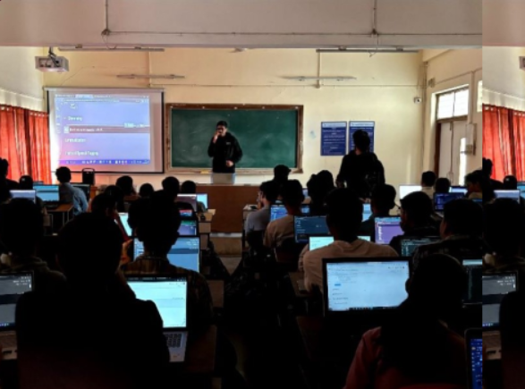
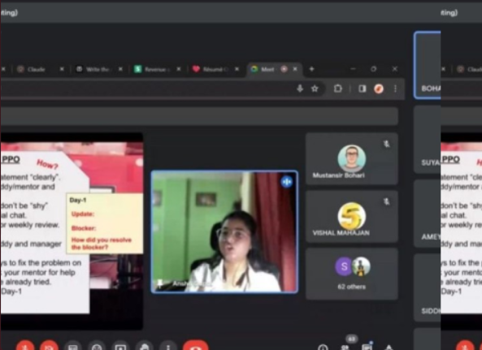
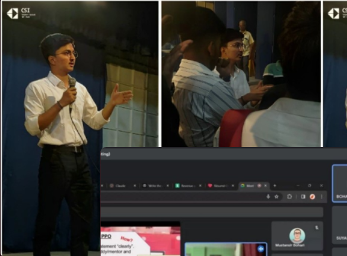
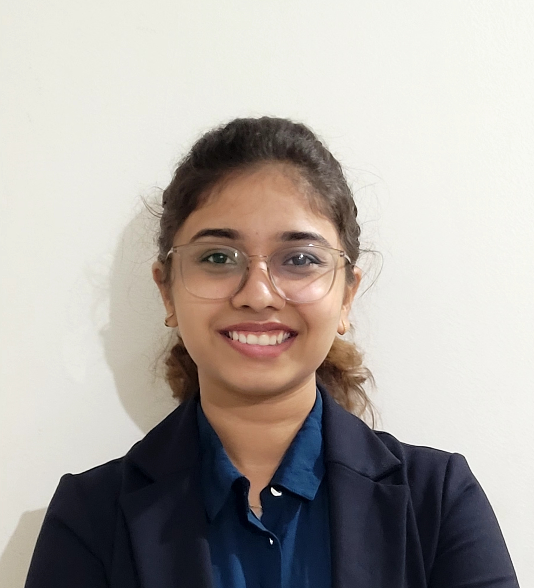
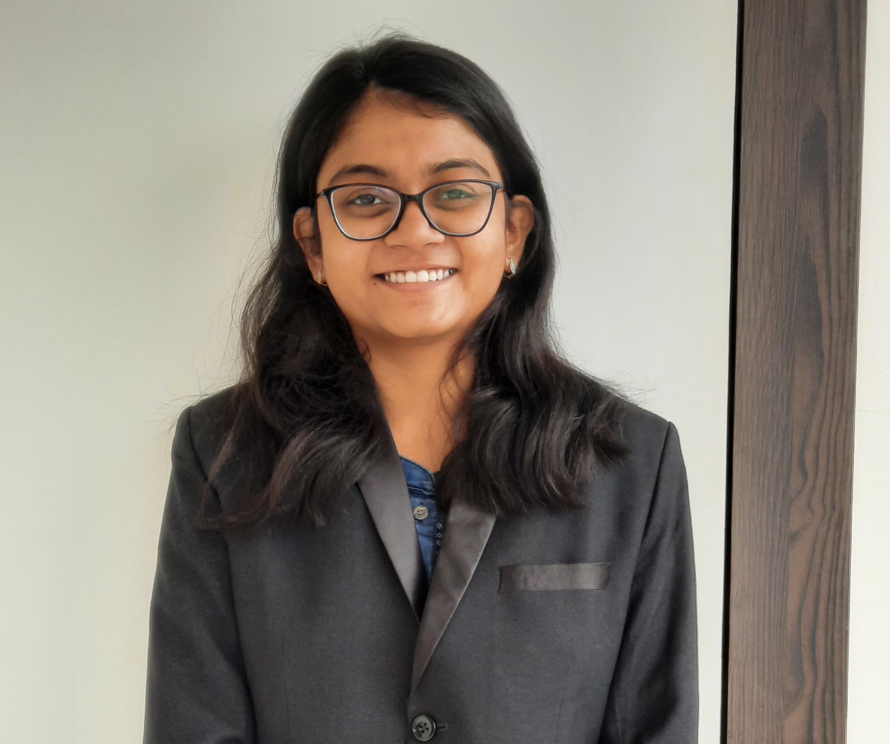

CSI VIT PUNE
Student Branch
Building what matters.
Welcome to the official website of the Computer Society of India,
Student Branch, VIT Pune. We’re all about ideating, envisioning,
debugging, and ultimately - building what matters!
Events
  Feb 12 - 16,2024
LLM WORKSHOP
VIT Pune
Jan 7 2024
Speaker Session
Online, free for all
November 2023
Placement Guidance Talk
Auditorium, VIT Pune
Announcements and Timeline
1.
MLOps
5 August 2024
Auditorium
3 pm
2.
Git and Github Workshop
20 August 2024
Room no. 1314
4 pm
3.
Codex
25 September 2024
MIT
3:30 pm
4.
Session on Cloud Security
13 October 2024
Online
11 am
About About About About About
Computer Society of India (CSI) Student Chapter at VIT Pune is a dynamic community that focuses on igniting a passion for technology among
students. They organize a variety of events throughout the academic year, with a primary emphasis on technical workshops covering topics
ranging from programming languages to cutting-edge technologies such as artificial intelligence and blockchain. These workshops aim to not
only enhance practical skills but also promote hands-on learning and collaboration. CSI also hosts hackathons where participants can
brainstorm and develop innovative solutions to real-world problems within a limited timeframe, fostering creativity and teamwork. Additionally,
the club arranges online sessions with industry experts who provide valuable insights and updates on tech trends, giving students a glimpse
into the current industry practices and future advancements.
Prof. Premanand Ghadekar
Pankaj Kunekar
Head, Department of IT, VIT Pune
Faculty Advisor
Siddhi Sangwai
President
Vice-President
Suyesh Sawant
Mathur Bhutada

Vice-President
Treasurer
Sandesh Kadam
Tanishka Pimple
Management Head

Web Development Secretary
Mayank Kulkarni
Meet The Team Meet The Team Meet The Team Meet The Team Meet The Team Meet The Team
-----------------------------------------------------------------------------------------------------------------------------------------------------------------------------------------------------------------------------------------------------------------------------------------
Quick Links
Contacts
Socials
csi@vit.edu
Instagram+91 90286 52004
LinkedInCSI VIT Pune, 2024-25